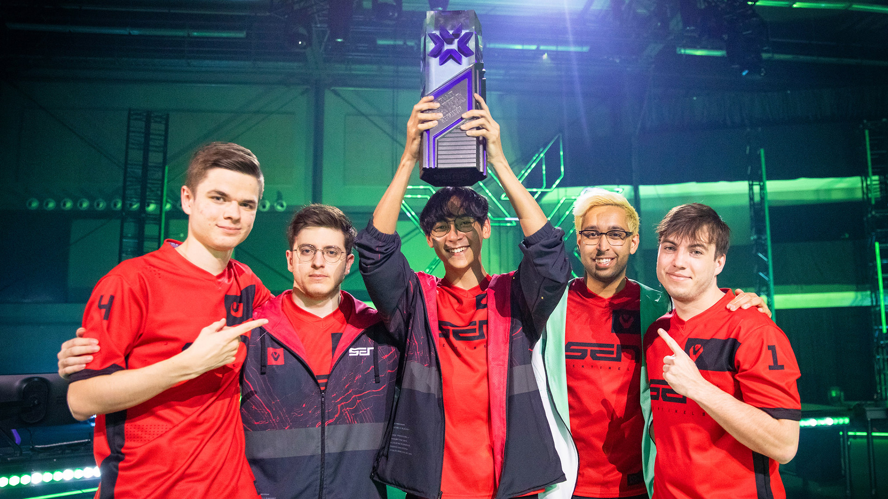
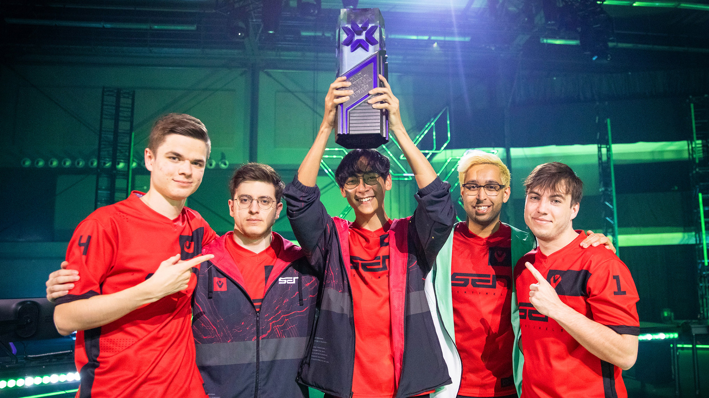

FPX Win Masters Copenhagen
Beaing a red-hot Paper Rex, FPX put themselves in history as the 2nd CIS team to win an international event in a massive lower bracket run
ValoTracker - The (Not So) Official Webtracker for 
VALORANT Champions Tour (VCT) is the official competitive circuit for Riot Games' tactical first-person shooter VALORANT. Boasting two years of competitive history, the developer backed circuit features teams from all across the world, competing to be the very best in global Masters and Champions tournaments each crowning an international champion. Watch as careers are defined, underdogs arise, and champions are crowned.
A Recap of VALORANT's International Competitive History
The first ever International VALORANT event to be held in person in Reykjavik, Iceland. Teams qualified through tournaments within their regions to compete for the pride of their region and to be the first ever international champions of VALORANT. Throughout history so far, two regions in partuiuclar maintained greater presence than all others being North America and Europe each showing the highest capabilties to become the world's best. These two regions took center stage in this first international as the events frontrrunners as rivalries flared between fans and competitors alike.
As the dust settled it came down to two: North America's Sentinels and Europe's FNATIC. Sentinels came in as North American favorites dominating the upper bracket without losing a game, besting FNATIC in an earlier match. FNATIC having lost traversed through the trecherous lower bracket but emerging stronger than ever. These two teams became the pride of each of their regions going into the grand finals as many watched as the first international champion would be crowned. Sentinels took the series 3 - 0 in 3 nail-biting games completing their flawless run.
 

After the first international tournament fans excitement were higher than ever. Eager to see this time which teams would represent their homelands in a now more global format with 16 teams attending. The tournament continued the trend of battles between North America and Europe, while other regions such as Korea and South America showed their skills en route to qualify for the Top 8.
One new team in particular was the interest of the masses, the Russian roster of Gambit Esports showed high promise to be world class qualifying as Europe's top seeded team, in particular within fellow competitors in interviews regarding their practice matches against the squad. However, a shaky group stage including an embarassing upset loss against North American 2nd seed 100 Thieves blowing a 11-3 lead (first to 13), put fans in question. Gambit silenced the doubters after qualifying to playoffs, where they showed their full potential against their opponents most nottably a 13 - 0 decimation of fellow European team G2 Esports. Finishing with a 3 - 0 win against North American Team Envy in Grand Finals.
The time finally came to see who would be the true champions of 2021. The stage was set with all storylines presented for fans to enjoy. Was this the year of North America, Europe or would a new regio rise to steal it away. Could Gambit repeat their success? Would Sentinels rebound after their early exit in Berlin losing to Team Envy in Quarterfinals? Fans were at the edge of their seat to find out. This tournament was an event of many upsets and much unpredictability. All regions looked stronger than ever and none of which felt too behind the curve. Southeast Asia performed particularly well amongst minor regions, with all Filipino Team Secret qualifying to Top 8 after going 2-1 in group stage matches even taking one game in a best of 3 against defending champions Gambit Esports. Thai team X10 Esports turned heads after eliminating runner up Team Envy to join the Top 8 ranks. South America's KRU Esports pulled off a miracle upset vs Sentinels, qualifying for playoffs to beat FNATIC in quaterfinals, eventually losing a heartbreaker quintuple overtime match against Gambit to finish 3rd/4th.
With North America caught in a storm of upsets hungry european teams arose to the top. In particular Acend Club was looking for redemption for a poor Berlin 2021 performance. And did so in fantastic fashion, sweeping through the playoffs to a finale with Gambit that went the distance in a 3-2 victory.
Coming into Reykjavik 2022 the playing field had gotten more wide than ever with teams all over the globe showing promise. In particular teams such as Brazil's LOUD, North America's The Guard and Korea's DRX all showed capability of making deep runs from humble beginnings. However, amongst all the competitors one team in particular came in overlooked and shocked the world. Zeta Division from Japan became an overnight phenomenon taking upset win over upset win to place 3rd and putting a once thought to be dying out region on the radar.
This tournament was one of redemption for North America in particular the team Optic Gaming previously Team Envy. After falling just short of a championship in Berlin and etting grouped in Champions this squad found itself on a tear through the tournament. In their way was LOUD the Brazillian super squadron who delivered in both talent, potential, and experience. The two teams met twice throughout the tournament with LOUD getting the better of Optic in the first exchange. Optic bounced back in the lower bracket eliminating Zeta Division to get their rematch and beat the Brazillian squad 3 - 0 in grand finals.

Masters Copenhagen continued the trend of even playing field across most regions. The group stage draw saw Optic and LOUD play each other in an elimation match early with Optic proving the winners and able to continue. The tournament once again gave rise to new faces this time with Singapore's Paper Rex showing what they were made of with their explosive still getting them through to Grand Finals, beating teams like Optic and FNATIC, and making history being Asia's first ever international FPS grand finalist. on the way. On the other hand FPX Esports had a tumultuous tournament playing with a substitute for most their way, once their full roster was fielded they became untouchable cleaning through the lower bracket and going to the finals. In the finals, they played a grueling 5 game set winning 3-2 against Paper Rex.
Finally we arrive at the most recent international Champions 2022. To keep this one short and sweet, this was by far VALORANT's most comeptitive event with every match going down to games of inches. FPX fell short at 4th defending their throne, while Paper Rex succumbed to upsets in groups. Optic looked once again like title contenders continuing their rivalry against LOUD. Teams like FNATIC, DRX, and XSET made deep runs as perennial contenders. However, as fate would have it, one last match between Brazil's LOUD and North America's Optic Gaming would decide the second ever World Champion. The Brazillian squadron proved better this time and in convincing 3 - 1 fashion crowned themselves as the standing VALORANT World Champions.
LOUD put Brazil on the map, after winning Champions 2022 against rival Optic Gaming
Beaing a red-hot Paper Rex, FPX put themselves in history as the 2nd CIS team to win an international event in a massive lower bracket run
Building their legacy brick-by-brick Optic Gaming win Iceland in a Grand Final Rematch against LOUD
Acend become the first ever Champions event in unlikely run.
Hailing from Russia Gambit Esports become the first European organization to lift an international trophy.
Sentinels give North America the first ever international title in a flawless run.